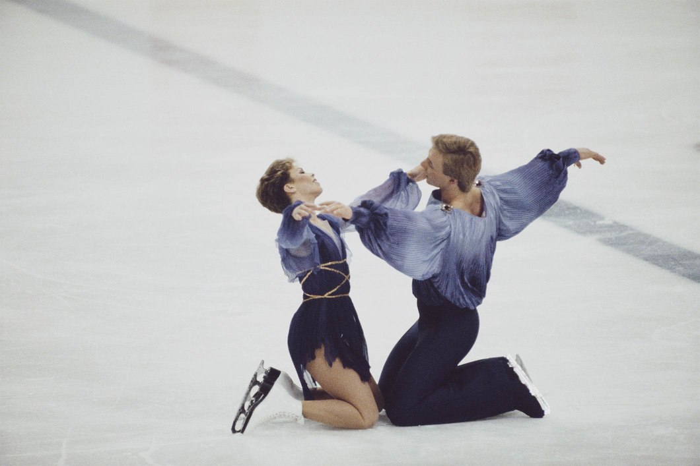

SNAPPED: TORVILL & DEAN RELIVE THE DAY THEY DANCED THEIR WAY TO ENDURING GLORY
SARAJEVO 1984
IT IS 35 YEARS SINCE BRITISH FIGURE SKATERS JAYNE TORVILL AND CHRISTOPHER DEAN DANCED THE BOLERO AT THE OLYMPIC WINTER GAMES SARAJEVO 1984, BUT THE PASSING OF TIME HAS DONE NOTHING TO DAMPEN THE WORLDWIDE FASCINATION WITH THEIR PERFORMANCE OR LESSEN THE IMPACT IT HAD ON THEIR SPORT.
The fact that a sizeable chunk of Great Britain’s 2018 primetime Christmas Day terrestrial television schedule was devoted to a dramatisation of a free dance performed by ice skaters Jayne Torvill and Christopher Dean in 1984 is a useful indication of the influence this Olympic moment has had on popular culture.
“It has never gone away, frankly,” Torvill said, the marvel still evident in her voice. “We are very charmed and humbled that people still remember it,” partner Dean added. “It makes us happy. It seems to be one of those Olympic moments. A lot of people come up and say to us, ‘I remember where I was when you won the Olympics’.”
Unlike many iconic sporting events, the enduring interest in Torvill and Dean’s Bolero comes not from the drama of close competition or the gloriously unexpected success of an underdog – the pair were comfortably leading the competition after day one – but instead from pure brilliance. The duo’s flawless display and obvious passion combined to dazzle the vast global audience.
“There was a lot of build-up,” Dean said. “People started following our careers in the late 1970s and then we won the world championships in 1981, then 1982 and then 1983. People bought into Jayne and Chris the skaters as well as the characters we were portraying on the ice. And the Bolero is a very hypnotic and romantic piece. In our heads anyway, it is a love story.”
As the reigning three-time European and three-time world champions, Torvill and Dean were huge favourites for Olympic gold heading to Sarajevo, but it was a decision taken long before the 1983/84 season began which would subsequently elevate the pair to mythical status.
“When we had set out for that season we had wanted to go in a different direction,” Torvill said. “We had won the world championships three times and we felt we were in a position to take the lead on going in a different direction and both of us liked to come up with new things and be creative. Maybe it was a risk in some ways but it was something we felt strongly about and believed in.”
The risk the skater from Nottingham, England, is referring to was the choice of Maurice Ravel’s Bolero as the piece of music the pair would perform their free dance to.
“At that time most music people used had a fast start and then into a slow piece and then a medium piece and then a fast ending,” Dean explained. “But the Bolero has one constant rhythm all the way through and the music has a crescendo from a single instrument at the beginning that builds and builds. It is a single piece of music that Ravel brilliantly was able to introduce all these other instruments to, with a single repetitive theme musically and yet it just builds and builds emotionally. And in the same way that is what we wanted to do on the ice; build to a climatic end.”
The radical choice of music led naturally to outfits and choreography that were equally daring. But as risky as it may have been, the judges loved what they saw. Torvill and Dean were awarded maximum marks for their display on 14 February 1984, the first and only time this has ever happened in Olympic competition.
#IOC IMAGES
Not that the couple can remember much about their gold medal-winning performance.
“There were moments, like at the beginning before we went on the ice, which you can remember, squeezing the hands, not saying anything, just looking at each other and then skating out,” Dean laughed. And then that finish. There seemed to be a silence throughout and then when we were laying on the ice and the rapturous applause came. It was almost like one of those surreal movies where it was all in slow motion and then you came back to reality when it all finished.”
It was an intense reality to return to. The duo may have watched the footage back later and spotted minor errors – “There is a bit where I thought, ‘Oh I should have pointed my toe a bit more there’,” recalled Torvill – but the public have never agreed.
“We realised that is what the audience wanted to see,” Torvill said of the pair’s subsequent professional career touring ice shows around the world. “They wanted to see a repeat of what they had seen – it’s like going to a rock concert and wanting the band to perform their biggest hit.”
From afar it seems like the stars aligned for two of Great Britain’s most famous Olympians on that extraordinary Valentine’s Day in Sarajevo, but as Dean gently pointed out, none of it was by accident.
“I suppose all the decisions we made were the right decisions or at least we made them the right decisions,” the skater said. “From the choice of music to the choreography, to the date that the final fell on – all of those things, you could say they were lining up, or was it the fact that we just worked very hard in pursuit of getting it right on that day?”
TAGSOLYMPIC NEWS, FIGURE SKATING, GREAT BRITAIN, SARAJEVO 1984
#Article from Olympic